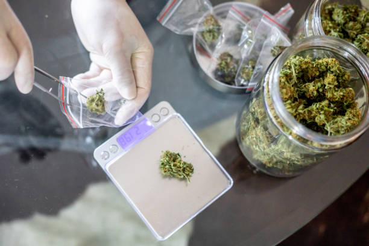

What is the impact of social media marketing on dispensary sales?
Posted by on 2024-06-10
The impact of social media marketing on dispensary sales is undeniable. In today's digital age, businesses need to have a strong online presence in order to reach their target audience and drive sales. Social media platforms such as Facebook, Instagram, and Twitter provide dispensaries with the opportunity to connect with potential customers in a more personal and engaging way.
One of the key benefits of using social media for marketing purposes is the ability to target specific demographics based on interests, location, and other factors. This allows dispensaries to tailor their messaging and promotions to appeal to their ideal customer base. By creating targeted ads and content, dispensaries can increase brand awareness and drive traffic to their stores or websites.
Another advantage of social media marketing for dispensaries is the ability to engage with customers in real-time. Platforms like Instagram and Facebook allow businesses to interact with followers through comments, direct messages, and live videos. This level of engagement helps build trust and loyalty among customers, ultimately leading to increased sales.
In addition, social media provides dispensaries with valuable data and insights that can be used to improve their marketing strategies. By analyzing metrics such as engagement rates, click-through rates, and conversion rates, businesses can identify what is working well and make adjustments as needed.
Overall, the impact of social media marketing on dispensary sales is significant. By leveraging these platforms effectively, dispensaries can increase brand visibility, engage with customers on a personal level, and drive sales growth. As technology continues to evolve, it is essential for businesses in the cannabis industry to adapt their marketing strategies accordingly in order to stay competitive in an increasingly digital world.